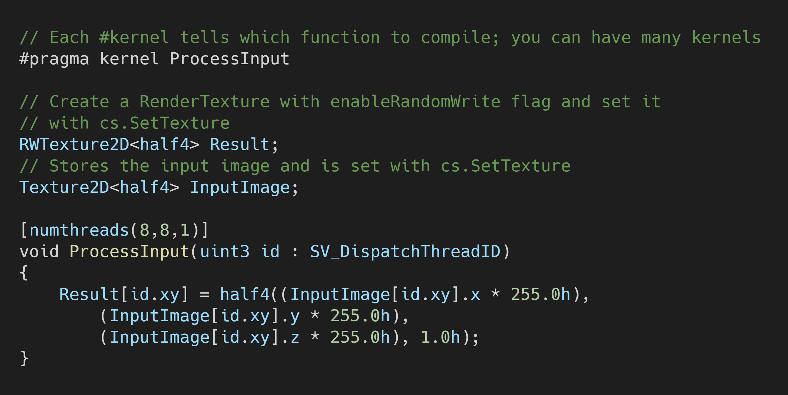
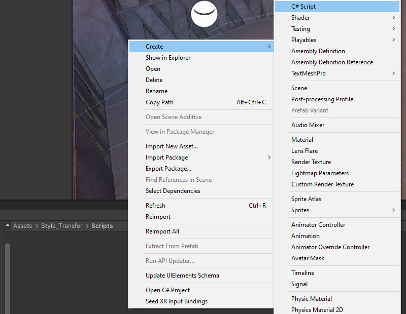
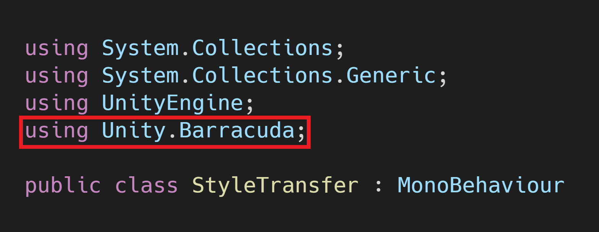
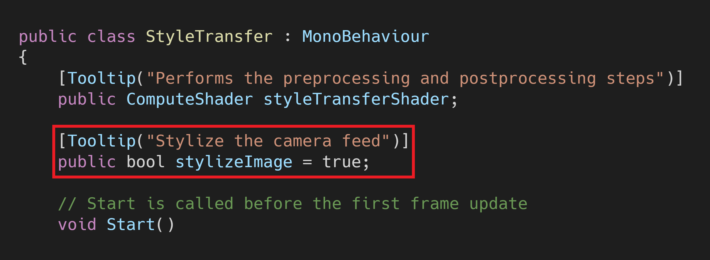
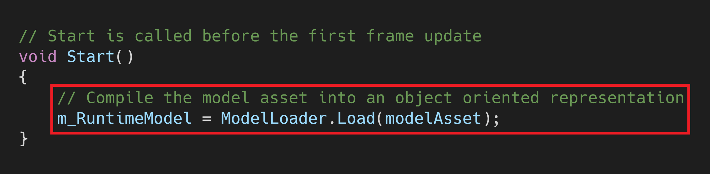
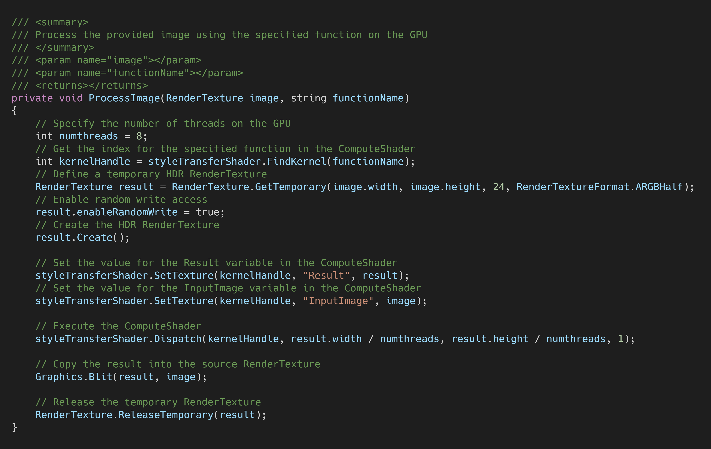

End-to-End In-Game Style Transfer Tutorial Pt.3
Previous: Part 2
Introduction
In this post we’ll implement our trained style transfer model in Unity.
Create Style Transfer Folder
We’ll place all our additions to the project in a new asset folder called Style_Transfer. This will help keep things organized.

Import Model
Next, we need to import the trained ONNX file that we created in Part 2.
Download ONNX Files
Right-click the final.onnx in your Google Drive project folder and click Download.

Alternatively, you can download the model that I’ll be using from the link below.
Import ONNX Files to Assets
Open the Style_Transfer folder and make a new folder called Models.

Drag and drop the ONNX file into the Models folder.
Create Compute Shader
We can perform both the preprocessing and postprocessing operations on the GPU since both the input and output are images. We’ll implement these steps in a compute shader.
Create the Asset File
Open the Style_Transfer folder and create a new folder called Shaders. Enter the Shaders folder and right-click an empty space. Select Shader in the Create submenu and click Compute Shader. We’ll name it StyleTransferShader.

Remove the Default Code
Open the StyleTransferShader in your code editor. By default, the ComputeShader will contain the following.

Delete the CSMain function along with the #pragma kernel CSMain. Next, we need to add a Texture2D variable to store the input image. Name it InputImage and give it a data type of <half4>. Use the same data type for the Result variable as well.

Create ProcessInput Function
The style transfer models expect RGB channel values to be in the range [0, 255]. Color values in Unity are in the range [0,1]. Therefore, we need to scale the three channel values for the InputImage by 255. We’ll perform this step in a new function called ProcessInput as shown below.

Create ProcessOutput Function
The models are supposed to output an image with RGB channel values in the range [0, 255]. However, it can sometimes return values a little outside that range. We can use the built-in clamp() method to make sure all values are in the correct range. We’ll then scale the values back down to [0, 1] for Unity. We’ll perform these steps in a new function called ProcessOutput as shown below.
Now that we’ve created our ComputeShader, we need to execute it using a C# script.
Create StyleTransfer Script
We need to make a new C# script to perform inference with the style transfer model. This script will load the model, process the input, run the model, and process the output.
Create the Asset File
Open the Style_Transfer folder and create a new folder called Scripts. In the Scripts folder, right-click an empty space and select C# Script in the Create submenu.

Name the script StyleTransfer.

Add Unity.Barracuda Namespace
Open the StyleTransfer script and add the Unity.Barracuda namespace at the top of the script.

Create StyleTransferShader Variable
Next, we need to add a public variable to access our compute shader.
Create Style Transfer Toggle
We’ll also add a public bool variable to indicate whether we want to stylize the scene. This will create a checkbox in the Inspector tab that we can use to toggle the style transfer on and off while the game is running.

Create TargetHeight Variable
Getting playable frame rates at higher resolutions can be difficult even when using a smaller model. We can help out our GPU by scaling down the camera input to a lower resolution before feeding it to the model. We would then scale the output image back up to the source resolution. This can also yield results closer to the test results during training if you trained the model with lower resolution images.
Create a new public int variable named targetHeight. We’ll set the default value to 540 which is the same as the test image used in the Colab Notebook.
Create Barracuda Variables
Now we need to add a few variables to perform inference with the style transfer model.
Create modelAsset Variable
Make a new public NNModel variable called modelAsset. We’ll assign the ONNX file to this variable in the Unity Editor.

Create workerType Variable
We’ll also add a variable that let’s us choose which backend to use when performing inference. The options are divided into CPU and GPU. Our image processing steps run entirely on the GPU so we’ll be sticking with the GPU options for this tutorial series.
Make a new public WorkerFactory.Type called workerType. Give it a default value of WorkerFactory.Type.Auto.

Create m_RuntimeModel Variable
We need to compile the modelAsset into a run-time model to perform inference. We’ll store the compiled model in a new private Model variable called m_RuntimeModel.

Create engine Variable
Next, we’ll create a new private IWorker variable to store our inference engine. Name the variable engine.
Compile the Model
We need to get an object oriented representation of the model before we can work with it. We’ll do this in the Start() method and store it in the m_RuntimeModel.

Initialize Inference Engine
Now we can create a worker to execute the model using the selected backend. We’ll do this using the WorkerFactory.CreateWorker() method.

Release Inference Engine Resources
We need to manually release the resources that get allocated for the inference engine. This should be one of the last actions performed. Therefore, we’ll do it in the OnDisable() method. This method gets called when the Unity project exits.

Create ProcessImage() Method
Next, we’ll make a new method to execute the ProcessInput() and ProcessOutput() functions in our ComputeShader. This method will take in the image that needs to be processed as well as a function name to indicate which function we want to execute. We’ll need to store the processed images in textures with HDR formats. This will allow us to use color values outside the default range of [0, 1]. As mentioned previously, the model expects values in the range of [0, 255].
Method Steps
- Get the
ComputeShaderindex for the specified function - Create a temporary
RenderTexturewith random write access enabled to store the processed image - Execute the
ComputeShader - Copy the processed image back into the original
RenderTexture - Release the temporary
RenderTexture
Method Code

Create StylizeImage() Method
We’ll create a new method to handle stylizing individual frames from the camera. This method will take in the src RenderTexture from the game camera and copy the stylized image back into that same RenderTexture.
Method Steps:
Resize the camera input to the
targetHeightIf the height of
srcis larger than thetargetHeight, we’ll calculate the new dimensions to downscale the camera input. We’ll then adjust the new dimensions to be multiples of 8. This is to make sure we don’t loose parts of the image after applying the processing steps with theCompute shader.Apply preprocessing steps to the image
We’ll call the
ProcessImage()method and passrTexalong with the name for theProcessInput()function in theComputeShader. The result will be stored inrTex.Execute the model
We’ll use the
engine.Execute()method to run the model with the currentinput. We can store the raw output from the model in a newTensor.Apply the postprocessing steps to the model output
We’ll call the
ProcessImage()method and passrTexalong with the name for theProcessOutput()function in theComputeShader. The result will be stored inrTex.Copy the stylized image to the
srcRenderTextureWe’ll use the
Graphics.Blit()method to copy the final stylized image into thesrcRenderTexure.Release the temporary
RenderTextureFinally, we’ll release the temporary
RenderTexture.
Method Code

Define OnRenderImage() Method
We’ll be calling the StylizeImage() method from the OnRenderImage() method instead of the Update() method. This gives us access to the RenderTexture for the game camera as well as the RenderTexture for the target display. We’ll only call the the StylizeImage() method if stylizeImage is set to true. You can delete the empty Update() method as it’s not needed in this tutorial.
Method Steps:
- Stylize the
RenderTexturefor the game camera - Copy the
RenderTexturefor the camera to theRenderTexturefor the target display.
Method Code
That completes the StyleTransfer script. Next, we’ll attach it to the active camera in the scene.
Attach Script to Camera
To run the StyleTransfer script, we need to attach it to the active Camera in the scene.
Select the Camera
Open the Biped scene and expand the _Scene object in the Hierarchy tab. Select the Main Camera object from the dropdown list.
Note: If you’re following along with the FPS Microgame, the Main Camera is a child of the Player object. However, the active camera is actually the WeaponCamera object which is a child of the Main Camera.
Attach the StyleTransfer Script
With the Main Camera object still selected, drag and drop the StyleTransfer script into the bottom of the Inspector tab.

Assign the Assets
Now we just need to assign the ComputeShader and model assets as well as set the inference backend. Drag and drop the StyleTransferShader asset into the StyleTransferShader spot in the Inspector tab. Then, drag and drop the final.onnx asset into the Model Asset spot in the Inspector tab. Finally, select Compute Precompiled from the WorkerType dropdown.

Reduce Flickering
The style transfer model used in this tutorial series does not account for consistency between frames. This results in a flickering effect that can be distracting. Getting rid of this flickering entirely would require using a different (and likely less efficient) model. However, we can minimize flickering when the camera isn’t moving by disabling the Post-process Layer attached to the Main Camera object.
Test it Out
At last, we can press the play button and see how it runs. If you went through my previous in-game style transfer tutorial, you should see significantly higher frame rates this time.

Conclusion
We now have a complete workflow for implementing in-game style transfer in Unity. We can train as many style transfer models as we want using the Colab Notebook and drop them into our project. I wasn’t expecting to get such a significant improvement in frame rate compared to my first attempt at in-game style transfer. This implementation might actually be usable on non-flagship graphics cards.
There are still two major drawbacks to the approach covered in this tutorial. First, you need to train separate models for each specific style image. Second, the flickering is still present.
There is a more recent variant of the style transfer model used in this tutorial that can perform apply the style of arbitrary images. However, that version takes significantly more time to fully train. That version also still results in the same flickering effect.
I had planned to use a style transfer model that provides more consistency between frames for this tutorial. Unfortunately, I wasn’t able to consistently get satisfying results and decided to exclude it. I still plan to make a stand alone post covering how to adapt the project from this tutorial series to use that model.